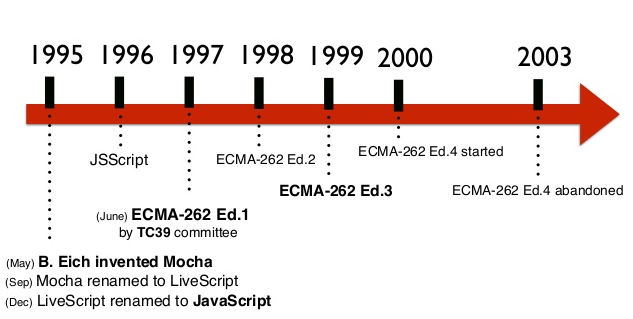
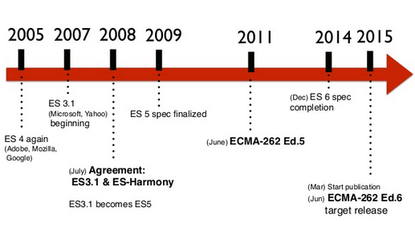
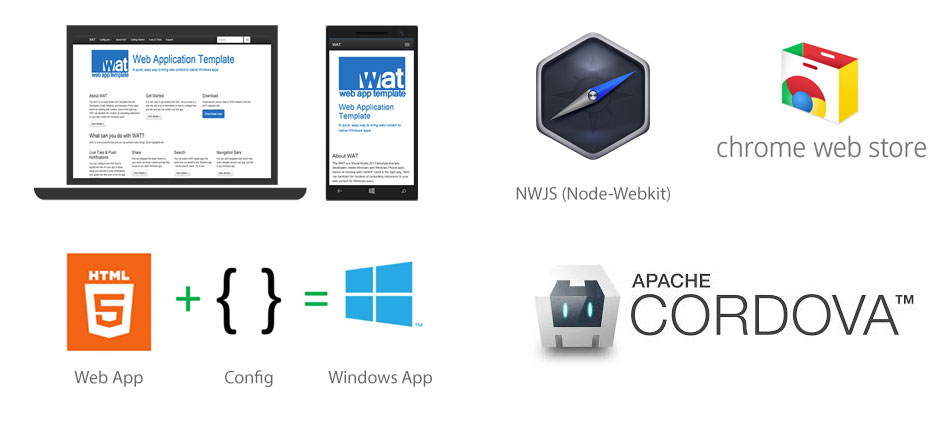

JavaScript
Trends
2015
Vitaly Kondratiev
January 2015
@vitkon
Ecmascript evolution
Ecmascript evolution
New features include:
- Arrow functions
- Scoping / Destructing / Parameters
- Iteration & Generators
- Collections
- Modularity / Classes / Templates
- API improvements
- Proxies
- and much more...
What to expect
- ES6 release is planned for 2015
- Full spec support by modern browsers
- Wider adoption by community and frameworks
Module example
/* lib/math.js */
export function sum (x, y) {
return x + y;
}
export var pi = 3.141593;
/* app.js */
module math from 'lib/math';
alert('2π = ' + math.sum(math.pi, math.pi));
Class example
class Person {
constructor(name, age) {
this.name = name;
this.age = age;
}
}
class Developer extends Person {
constructor(name, age, ...languages) {
super(name, age);
this.languages = [...languages];
}
}
let me = new Developer('John', 24, 'ES5', 'ES6');
Useful Links
ES6 Features
https://github.com/lukehoban/es6features
ES6 Compatibility
http://kangax.github.io/compat-table/es6
Understanding EcmaScript6 (N. Zackas)
https://leanpub.com/understandinges6/readWhy?
- You get more errors at compile time. Early errors are good, faster than running unit tests.
- Helps IDEs with auto-completion, helps exploring API
- Type annotations are useful for documenting parts of an API
- Checking and documenting types helps large teams collaborate
- Make it more palatable for Java devs
Microsoft TypeScript
- Subset of ECMAScript 6 plus optional static typing
- Type annotations / Interfaces / Visibility modifiers
- Allows you to provide static type information for existing (untyped) code via external files, which have the file name extension .d.ts.
d.ts for popular libraries — http://definitelytyped.org
function add(x : number, y : number) : number {
return x + y;
}
add('a', 'b'); // compiler error
Facebook Flow

- Type checker for ECMAScript 6 that is based on flow analysis
- Type annotation syntax compatible with TypeScript
- Flow can infer more types, which means that it is more useful for existing (completely unannotated) code bases
- Allows to gradually evolve your existing codebase into typed
- Supports React's JSX
/* @flow */
function foo(x) {
return x * 10;
}
foo('Hello, world!'); // error here
Google AtScript
- Type annotations for variables, parameters and properties
- Type annotation syntax compatible with TypeScript
- Meta-data annotations (which are called “annotations” in Java and “decorators” in Python)
- AtScript — Preferred way to code AngularJS 2.0
- In contrast to TypeScript and Flow, both data is available at runtime
class MyClass {
methodA(name : string) : int {
var length : int = name.length;
return length;
}
}
A common standard?
The teams of TypeScript, Flow and AtScript seem eager to collaborate.
Expectations for typed JS
- Runtime type checking
- Static type checking: IDE support
- ECMAScript proposal
- Browser support
- ECMAScript standard
Desktop, Mobile and more
Website as a Web App
- Controlled access to device hardware and functionality
- Offline mode
- Native UI elements integration
- Push notifications
Native JS has arrived
- Apache Cordova is native for Windows platform
- Firefox OS, Smart TVs (LG with Open WebOS) and gaming platforms (XBox One)
- JS for automation in OSX Yosemite
- WKWebView with Nitro JS engine runs as fast as Safari in iOS8
- Seamless integration Java-JavaScript via Java 8 Nashorn
Extending web stack possibilities
- Geolocation
- Vibration
- Battery status
- Sensors (ambient light sensor, accelerometer)
- Camera and Mic
- etc
What to expect
- It will take a few year to fully implement it
- Feature detection and progressive enhancement FTW
Frameworks sometimes help to decrease complexity
- Angular (Google)
- Backbone
- Ember
- Flight (Twitter)
- Knockout (Microsoft)
- Polymer (Google)
- React (Facebook)
Big boys dominating the market
What to expect
- As we gain experience we might rethink our ways of doing things. React and Angular 2.0 is a good example
- Complex solution require language extensions and advanced tooling (Modules, typed script, build)
- Compatibility and iteroperability between frameworks, modules and libraries (Npm, Browserify)
4 Core Elements
- Custom Elements
- Templates
- Shadow DOM
- Imports
Browser Support
- Chrome — full
- Firefox — partial
- Safari — none, in the roadmap
- IE — none, in the roadmap
Custom element with Polymer
Hello {{who}}
What to expect
- Full implementation of Web Components recommendation in the browsers
- Adoption of Web Components standard by frameworks
- New ways of building and testing for the web
Node.js leaderboard
- npm - commonJS modules
- bower - front-end packages
- grunt - de-facto build tool
- gulp - lean competitor of grunt
- browserify - dependency management and loader
What to expect
- Adoption of package management tools for enterprise. (Latest hybris storefront has grunt build tool in place)
- Package management as a manadatory part of a web app
- Visual UIs for build tools (Gulpfiction)
- More generators like Yeoman to ease the startup configuration
WebGL maturity
WebGL became mature in terms of security and browser support
WebGL libraries
- Three.js
- Babylon.js
- D3 for infographics
What to expect
- Virtual Reality in the browser
- New media formats
- Evolution of animation tools within web stack
Gaming engines evolution
http://unity3d.com — a browser 3D game without plug-ins
What to expect
- 3D game engines based on JS/WebGL
- Social networks as a delivery channel for games